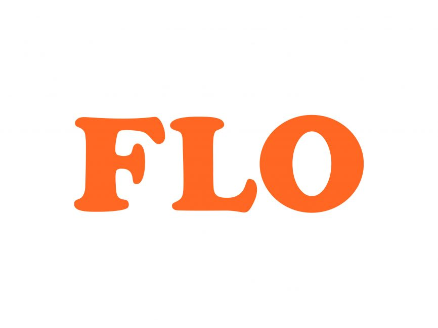
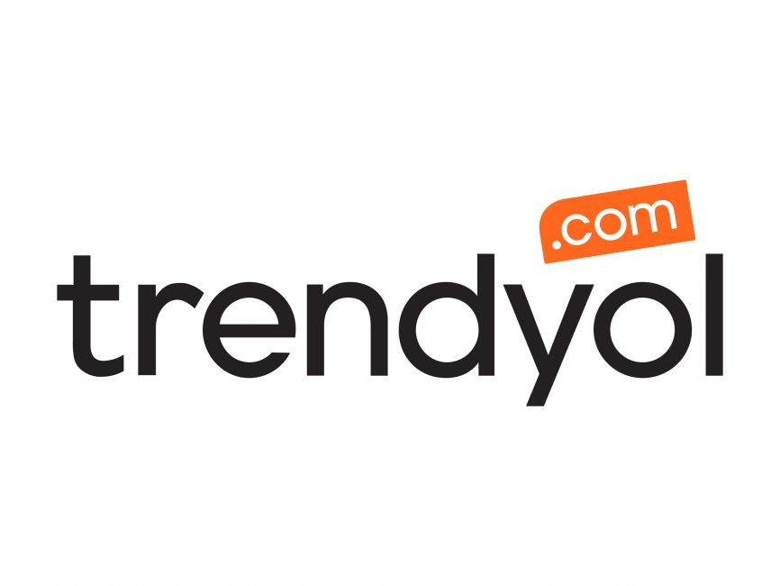
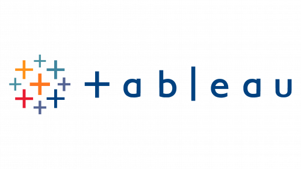

In this project, I worked on solving problems with imbalanced data using SMOTE (Synthetic Minority Over-sampling Technique).
SMOTE helps to balance the data by creating synthetic samples for the minority class. After balancing the data, I evaluated the performance of different machine learning models.
Project Overview:
In real-world data, classes are often imbalanced, which makes it hard for machine learning models to make correct predictions. In this project, I used SMOTE to balance the dataset and then trained models to see how performance improved after balancing. I compared the performance of different models to check how SMOTE affected the results.
Technical Details:
Dataset: I used an imbalanced dataset to show how SMOTE can help balance the classes.
Methods: SMOTE was used to increase the number of minority class samples and help the model learn better.
Modeling: I tested several machine learning algorithms (e.g., Logistic Regression, Random Forest) to see how they performed before and after applying SMOTE.
Evaluation: I used accuracy, precision, recall, and F1-score to measure the performance of the models.
Results and Learnings:
SMOTE improved the performance of the models, especially for predicting the minority class.
I learned the importance of data preprocessing and how balancing the data can lead to better model results.
This project shows my ability to work with imbalanced datasets and improve model performance.
In this project, I cleaned and explored a dataset about mass layoffs in 2022. Using SQL, I standardized the data, grouped it, and did a time series analysis.
I found important trends in layoffs across different sectors and companies.
In this project, I worked with a dataset about smoking habits in the UK. Using Python, I explored the data by calculating
summary statistics for different types of data and visualizing important relationships. This helped me understand smoking
habits better.
In this project, I used the CoinMarketCap API to regularly pull cryptocurrency data. I saved the data in a CSV file and
created charts to show price changes and performance. This helped to understand how the prices of cryptocurrencies change over time.

In this project, I predicted the Customer Lifetime Value (CLTV) for 6 months based on customer buying habits.
I used models to predict future buying behavior and spent amounts. I also grouped customers into different
segments based on their CLTV.

In this project, I created a Python tool that tracks the prices of products on Trendyol. The tool checks prices
regularly and sends an email when a product reaches a certain price. It also saves the data in a CSV file for
future reference.
In this project, I predicted movie ratings using the IMDb dataset. I applied the XGBoost algorithm and fine-tuned the model's hyperparameters to improve accuracy.
The goal was to create a model that can predict movie ratings based on various features like genre, director, and cast.
In this project, I worked on predicting whether passengers survived the Titanic disaster. I cleaned the data, explored it, and used machine learning models to make predictions.
This project improved my skills in data analysis and model building.

All of my Tableau Dashboards